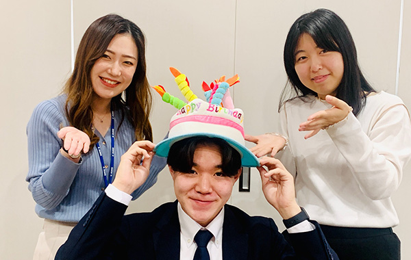

I-ne
商品と森の写真から、暮らしの写真を並べた画面へ。中央に会社の言葉が残るので、別々の写真が一つの考えに結び付きます。
クレイスでは一つの仕事を、依頼する側と担う側から見せる構成に使えます。
これまでの演出・写真案はすべて白紙にしました。今回はトップの最初の二画面に絞り、訪問者に残したい印象を選びます。
クレイスなら「誰か一人」に当たる主役を、ネットワークを設計・構築・運用する仕事に置けます。最初の一画面で仕事を覚え、次の画面でそれを担う人を知る順序です。参考サイトを開く ↗
商品と森の写真から、暮らしの写真を並べた画面へ。中央に会社の言葉が残るので、別々の写真が一つの考えに結び付きます。
クレイスでは一つの仕事を、依頼する側と担う側から見せる構成に使えます。
映像の上に大きな企業メッセージを置き、その上端には製品や問い合わせへの入口があります。下へ送ると具体的な情報が並びます。
クレイスでも、初めて見る人は表紙を楽しめて、相談先を知りたい人は最初から進める配置が合います。
トライベックの2024年調査では、197社中、三菱電機のFAサイトが1位。指標は業務目的のアクセス率と、訪問者の情報ニーズ充足率の積です。
クレイスの判定にも「何を頼めるか説明できる」「相談先まで進める」を入れます。受賞や順位は、特定の演出が成果を生んだことまでは示しません。
下図は文字の大きさと構図の見本です。文言・写真は仮置きです。
白に近い紙面から濃紺の見開きへ。設計・構築・運用の三語が一列の小見出しに収まり、空いた面に既存の事業説明が現れます。その下で「仕事を相談する」「技術者として働く」を選べます。
強みは、最初の数秒で会社の仕事を覚えられること。文字が動くだけに見えないよう、移動の終点に具体的な説明を置きます。

この仕事を余白のある明るい画面に、社員写真を一枚大きく載せます。次の画面では同じ人物の仕事と育成を縦組みの雑誌のように読み進めます。
採用で人物像を覚えてもらいたい場合に向きます。本人の掲載許諾と取材できる業務が揃って初めて成立します。
最初から二つの大きな入口を並べます。企業向けは業務と問い合わせへ、応募者向けは育成・募集要項へ。スマホでは上下に並べ、最初の画面で両方を見せます。
用事がある人が最も早く進めます。会社の第一印象は弱くなりやすいため、一行の事業説明を両方の入口に先立てます。